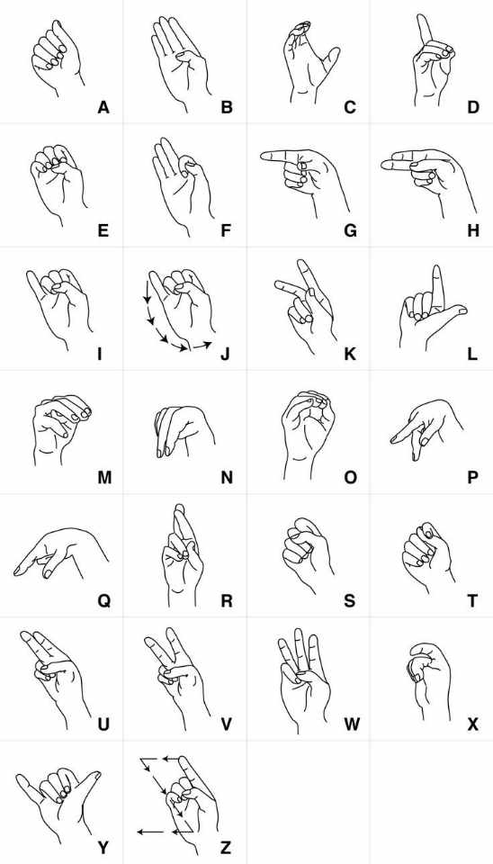
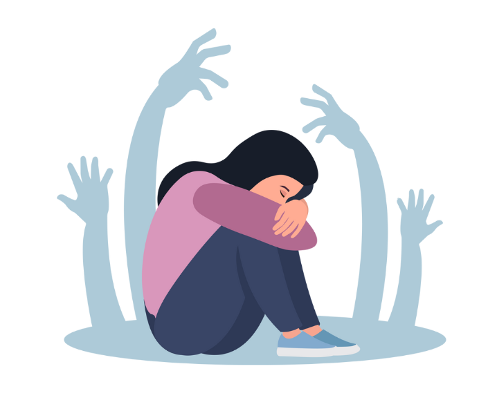

> Standard Sign Language, often referred to as a complete natural language, utilizes hand shapes, facial expressions, and body movements to convey meaning. It is used primarily by deaf and hard-of-hearing individuals but can also be learned and used by hearing individuals.
> Braille is a tactile writing system used by people who are visually impaired. It can be read either on embossed paper or by using refreshable braille displays that connect to computers and smartphone devices. Braille can be written using a slate and stylus, a braille writer, or with the use of a computer connected to a braille embosser.
> Here are some examples on how to communicate to the people around you respectfully and politely:
1. Active Listening: Pay attention to what other people saying without interrupting. Show understanding by reflecting on their emotions.
2. Be Clear and Concise: Communicate your ideas clearly and concise. This helps prevent misunderstandings.
3. Be Considerate: Choose your words carefully to avoid causing hurt feelings. Be professional in sensitive situations.
> Overcoming social anxiety and improving social skills takes time and effort. Gradual exposure, challenging negative thoughts, practicing relaxation techniques, setting realistic goals, joining social groups and focusing on positive strengths are some ways to achieve it. Self-care and self-compassion are also essential.
